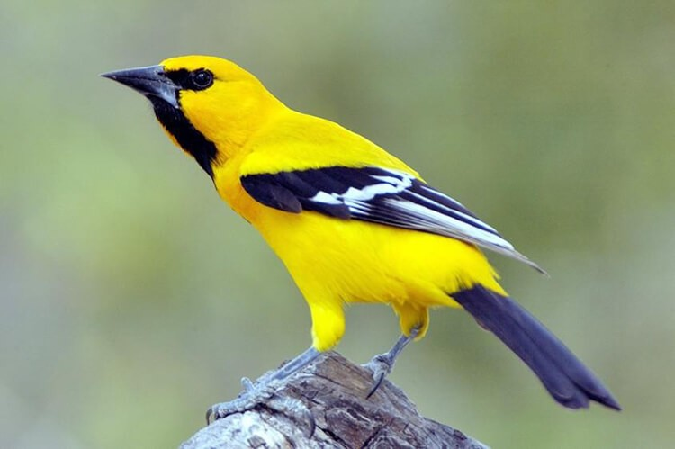
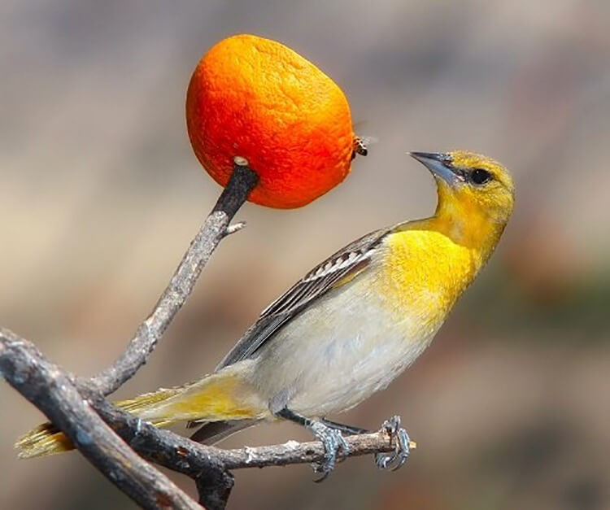
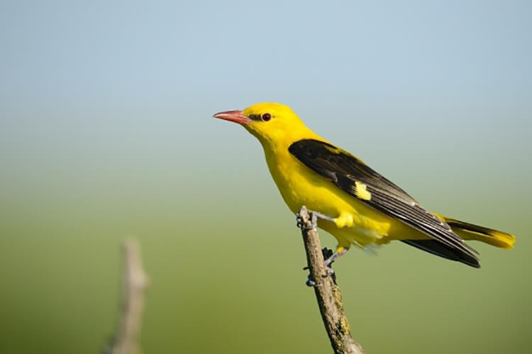

CHIM VÀNG ANH ĂN GÌ? VÀNG ANH GIÁ BAO NHIÊU?
Chim vàng anh có đặc điểm gì?
Trước khi tìm hiểu chim vàng anh ăn gì thì bạn cần biết được nguồn gốc xuất xứ và đặc điểm của loài chim này. Vàng anh tên hay còn được gọi là chim hoàng anh, đây là loài duy nhất thuộc họ Vàng anh, bộ sẻ, sinh sống chủ yếu ở khu vực ôn đới của Bắc bán cầu.
Chim hoàng anh có đặc điểm ngoại hình khá thu hút, cụ thể như sau:
Đầu chim đen, mỏ đỏ, mắt đỏ, chân nâu, toàn thân có màu vàng chanh, đuôi và cánh có đặc điểm màu trắng đen.
Chim vàng anh có 16 giọng hót được phân khúc đặc sắc và hai giọng hít ru khi chúng nuôi con, đem đến tính độc đáo, sự khác biệt của loài chim này.
Vàng anh là loài chim có giọng hót rất hay, hót giỏi và có kích cỡ trung bình. Chim có 16 giọng hót, tiếng hót của chúng giống với chim giẻ củi nhưng thánh thót hơn.
Chim vàng anh ăn gì?
Chim vàng anh là loài ăn tạp, chúng ăn những loại thức ăn có sẵn trong tự nhiên như sâu bọ, hoa quả, thậm chí là mật ong. Một số loài hoa quả phổ biến có thể kể đến như táo, đu đủ, chuối ngọt,... Mặt khác, chim vàng anh có thể ăn nhiều loại giun nhỏ, sâu bọ nhỏ, cào cào.
Ngoài ra, bạn có thể cho chim vàng anh ăn những loại thức ăn tổng hợp như cám gạo, cám ngô, bột đậu xanh. Tùy vào các mùa trong năm mà bạn có thể cho chim ăn nhiều loại hoa quả mọng nước, mùa đông ăn hoa quả như cà chua.
Các loài chim vàng anh tại Việt Nam
Việt Nam có khí hậu nhiệt đới gió mùa, thích hợp cho sự sinh trưởng và phát triển của Vàng anh. Có 4 loài Vàng anh xuất hiện phổ biến tại Việt Nam như sau
Chim vàng anh gáy đen
Loại Vàng anh này rất dễ để chúng ta nhận dạng thông qua màu sắc ở bộ long của chúng bởi những đường sọc đen quanh khu vực mắt rồi kéo dài đến tận sau gáy. Thức ăn của vàng anh gáy đen bao gồm cồn trùng, cây cỏ và trái cây.
Chim vàng anh mỏ mảnh
Vàng anh mỏ mảnh sóng chủ yếu ở Việt Nam, Thái Lan, Bhutan, Ấn Độ, Lào,.. Chúng thích hợp sống trong những cánh rừng rậm nhiệt đới hoặc cận nhiệt đới mang đầy đủ các đặc điểm của vàng anh.
Chim vàng anh đầu đen
Vàng anh đầu đen thích nghi trong những cánh rừng thư lẫn nhân tạo. Loài chim này có số lượng ít nhưng tỷ lệ sống của chim con luôn ở mức cao. Loài chim này thường đẻ 3 trứng trên mỗi chu kì, nếu như nhận thấy vỏ chuyển sang màu vàng tức là con của chúng đã chuẩn bị được ra đời. Khi những chú chim con vàng anh chào đời mẹ của chúng sẽ tập đi và tập bay bằng cách mẫu trước để các con nhìn theo và ghi nhớ.
Chim vàng anh đỏ
Vảng anh đỏ nằm trong to 4 những loài chim Vàng anh được nuôi nhiều nhất tại Việt Nam. Chúng xuất hiện nhiều ở Việt Nam, campichia, Trung Quốc, Ấn Độ, Thái Lan,... đặc biệt là những khu rừng ẩm nhiệt đới và cận nhiệt.